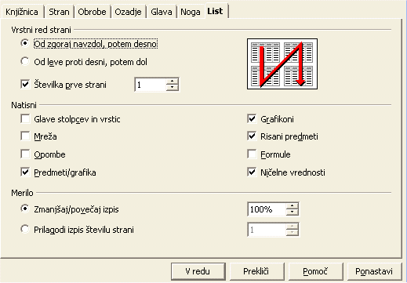
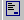

Kako nastavimo obmo�je tiskanja
dostavlja projekt slovenjenja OpenOffice.org, Lugos in Agenda
Tabela vsebine
1. Tiskanje bloka
OpenOffice.org ponuja mo�nost tiskanja dolo�enega bloka celic preglednice. Kako to izgleda si lahko pogledamo na primeru:
- Ozna�imo podro�je preglednice, ki ga �elimo natisniti (lahko je npr. samo vrsta z rezultati, ko ne �elimo tiskati podatkov).
- V meniju Oblika izberimo 'Obsgi tiskanja...' in nato 'Dolo�i'.
- Blok za tiskanje je tako dolo�en in ga na listu lahko vidimo ozna�enega
z debelej�o sivo �rto.
V predogledu tiskanja (Datoteka - Predogled tiskanja) lahko vidimo, da bo na papir res natisnjena le vsebina celic znotraj dolo�enega bloka tiskanja.. - Za tiskanje lahko pripravimo kolikor ho�emo blokov celic tako, da nove izbore
dodajamo k starim z izbiro: Oblika-Obseg tiskanja - 'Dodaj'.
Pozor! Vsak blok tiskanja se bo natisnil na svoj list. - Da potrdimo (ali spremenimo) bloke tiskanja izberemo Oblika-Obseg tiskanja-Uredi...
Obseg tiskanja je izpisan v prvi koloni pod imenom 'uporabni�ko dolo�eno'. - Naslednji dve vrstici sta povezani z vrsticami in stolpci, ki jih ho�emo
ponoviti med tiskanjem obsegov. Lahko:
- direktno vstavimo celice s tipkanjem,
- ali kliknemo na stransko ikono, nato kliknemo in potegnemo preko �elenega obmo�ja celic.
2. Nastavitve lista
Ve�ji del nastavitev tiskanja za list je dosegljivih preko menijskega ukaza Oblika-Stran v zavihku List.

POdatki na oknu so toliko razvidni, da ni potrebne posebne razlge, razen pri izbiri Merilo, ki je nekoliko nenavadno:
- 'Zmanj�aj/pove�aj zapis' omogo�a pove�anje/zmanj�anje tiskarsko sliko strani.
- 'Prilagodi izpis �tevilu strani' omogo�a. da dolo�imo natan�no �tevilo strani na katere se mora preglednica natisniti. Velikost lista se bo samodejno ponastavila.
To pogovorno okno lahko odpremo tudi s klikom na ikono za Predogled tiskanja, ki jo najdemo v Predmetni vrstici.
3. Tiskanje strani
Nasvet kako lahko hitreje tiskamo iz dolo�enih strani peglednice ali celo celotne datoteke:
- kliknimo na zavihek drugega lista, da ga izberemo,
- med tem, ko dr�imo CTRL tipko, kliknimo �e na List4. IZbrali smo oba lista.
- klikni ikono Natisni in delo je kon�ano!
Pozor: �e ho�emo vstaviti isto stvar na ve� listov, jih izberemo, kot smo malo prej. NAto na prvem listu vnesimo podatek v dolo�eno celico. No, vne�eni podatki so vidni na vseh izbranih listih.
Ostale nastavitve tiskanja lahko nastavljamo, �e izberemo Datoteka-Natisni.... �e kliknemo na gumb 'Mo�nosti' se znajdemo pred pogovornim oknom, ki krmili vklop izogibanja praznim listom in mo�nost tiskanja samo dolo�enih strani.
Za ogled strani kot bo opremljena s prelomi strani pred tiskanjem:
- izberimo Pogled-Predogled preloma strani.
Izbor tiskanja je ozna�en z modrim robom.
4. Zasluge
Autor: Sophie Gautier
Zahvala: Richard Holt, proofreader and OOo contributor
Integracija: Gianluca Turconi
Prevedel: Roman Bobnari�
Zadnji� spremenjeno: 24.2.2002
Prevedeno: 27.10.2002
Stiki: OpenOffice.org Documentation Project http://whiteboard.openoffice.org/doc/ in www.agenda.si